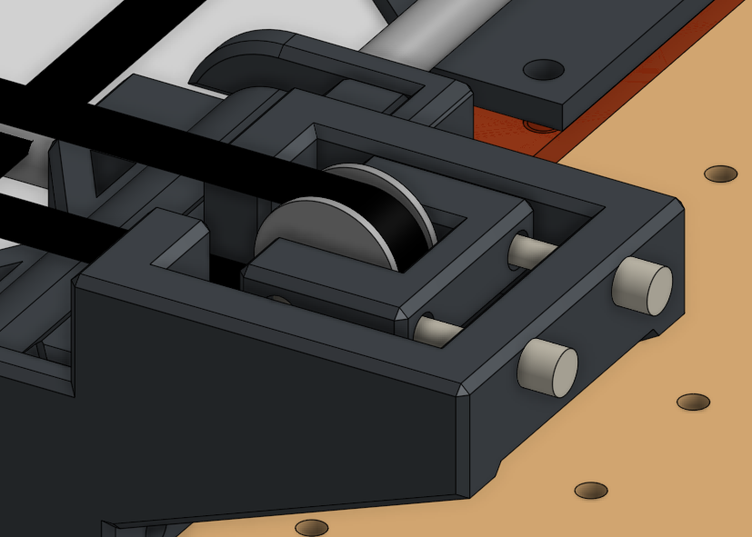

2. Assemblage Mécanique
Une fois les pièces imprimées en 3D, l'étape de l'assemblage mécanique demande minutie et précision. L'objectif de cette étape est d'obtenir une cinématique parfaitement fluide, sans aucun point de friction (point dur) ni jeu mécanique (backlash).
1. La Base et l'Équerrage
Conformément au cahier des charges, nous sommes partis d'une fondation fournie par l'école : une base composée de profilés en aluminium et d'un plateau en bois. Tout notre travail a consisté à greffer notre cinématique cartésienne sur cette base rigide, en nous assurant que les axes X et Y soient parfaitement perpendiculaires (à 90°).
2. Le Guidage Linéaire (La fluidité absolue)
Pour le coulissement de l'axe transversal, nous utilisons des tiges lisses en acier de 6mm. Pour garantir un mouvement parfait :
- Fixation : Les tiges de 6mm sont fermement bloquées à leurs extrémités par un système de serrage par vis, les empêchant de translater ou de vibrer lors des mouvements rapides.
- Glissement (Astuce de pro) : Plutôt que d'utiliser des roulements à billes linéaires métalliques (bruyants et parfois accrocheurs), nos professeurs ont imprimé des paliers lisses (bagues) en PETG-PTFE. Le PTFE (Téflon) contenu dans ce filament offre des propriétés auto-lubrifiantes. Couplé à un lubrifiant mécanique liquide, on obtient un glissement totalement silencieux et d'une fluidité redoutable.
3. La Transmission (Tension des courroies)
La précision du tracé dépend directement de la tension des courroies crantées GT2. Si elles sont trop lâches, le dessin sera déformé. Si elles sont trop tendues, les moteurs vont forcer.
Nous avons conçu des tendeurs de courroie intégrés très simples et efficaces : l'action de visser une seule vis tire directement le support de la poulie folle, ce qui permet d'ajuster la tension de la courroie au millimètre près, comme on accorderait une corde de guitare.
